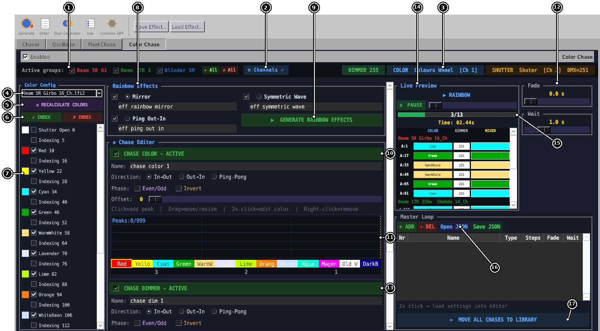

For: Full
Color Chase is a tab of the Effect Generator for colour and dimmer chases on the groups of the Patch: three ready rainbow effects, and a Chase Editor where you place colours and light on a matrix and they run across the fixtures - mirrored on each group, every active group in step with the largest one. The preview plays on the output too. What you make goes into the Library as light sequences.

Andrei_edit: the colours of Beam 5R Girbo 16_Ch, the Mirror rainbow playing in Live Preview.
| 1 | Active groups - the groups that take part (✓ All / ✕ All). Every one gets the same colours: its own value of that colour, else the nearest it has. |
| 2 | Channels - the table of the Dimmer, Color and Shutter channels of each group, found in its profile; choose them there if one is missing. |
| 3 | The channels used now: DIMMER, COLOR (the colour wheel and its channel), SHUTTER (with its open value). |
| 4 | The profile whose colours are listed (the reference group). |
| 5 | RECALCULATE COLORS - the colour bar of the Chase Editor (11) made again from the colours ticked in the list. |
| 6 | ✔ INDEX / ✘ INDEX - ticks or unticks every "Indexing" line of the list at once. |
| 7 | The colour list of the wheel, with the DMX value of each: tick the colours a rainbow effect uses. |
| 8 | Rainbow Effects - Mirror, Ping Out-In, Symmetric Wave: three ready colour runs, each with its name. The dot: the list shows its colours and the preview plays it; the tick: it is generated. |
| 9 | GENERATE RAINBOW EFFECTS - writes every ticked effect into the Library, under its name. |
| 10 | CHASE COLOR - the colour chase: its name, Direction (In→Out, Out→In, Ping-Pong), Phase (Even/Odd: even places first; Invert), Offset. The tick turns it on (ACTIVE). |
| 11 | The matrix of the colour chase and, under it, the colour bar: the colours you place (see below). |
| 12 | Fade / Wait - the fade and the hold of every step. |
| 13 | CHASE DIMMER - the same for the light: where the fixtures are on and how bright. |
| 14 | Live Preview - what plays: the name (RAINBOW / CHASE), PAUSE / PLAY, and for every fixture its colour, its dimmer and the two mixed. |
| 15 | The progress: step 3 of 13 and the time of the whole run. |
| 16 | Master Loop - + ADD puts the chases switched on into the list, - DEL takes the selected one out, Open JSON / Save JSON keep the list in a file. Double-click a line: its settings come back into the editor. |
| 17 | MOVE ALL CHASES TO LIBRARY - every chase of the Master Loop into the Library ("color+dimmer" when it has both). |
The columns are the fixtures of half a group (the other half does the same, mirrored). A peak is a colour - or, in the dimmer chase, a light - placed on a column. Its height is how far it spreads to the fixtures next to it: click higher for a taller, wider peak. In the dimmer chase the light of a wide peak fades towards its edges. At every step all the peaks move one fixture on, in the Direction chosen; the run has as many steps as half the largest group has fixtures (Ping-Pong: there and back).
| click | Adds a peak on that column, as tall as the place you click (the colour selected on the bar). |
| drag | Moves a peak to another column, or up and down to make it taller or shorter. |
| double-click | Colour chase: the peak blinks - choose its colour again on the bar. Dimmer chase: its value. |
| right-click | Removes the peak. |
| the colour bar | Click a colour to use it for the next peaks. The numbers under it count how many peaks have that colour. |
With no peaks, the colour chase gives every fixture the first colour of the bar, and the dimmer chase full light.
As on the other tabs, Save Effect... / Load Effect... keep the whole page, and Enabled off greys it and sends nothing.